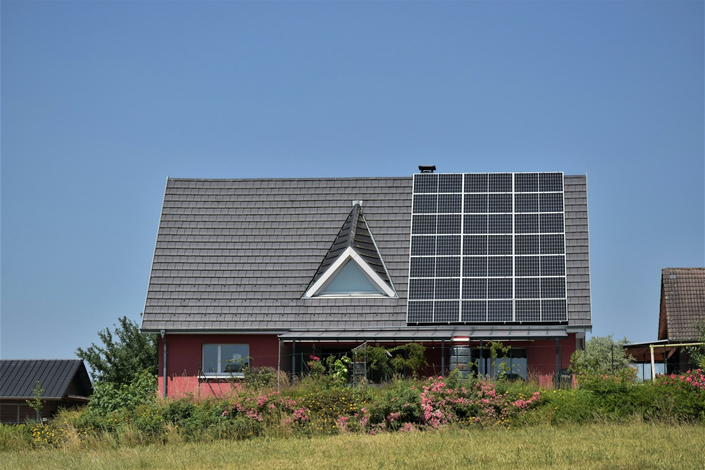

Energia solar residencial
Estudo do consumo e das condições do imóvel para planejar uma solução.
Soluções em energia solar para residências, empresas e propriedades rurais. Um projeto que começa com a sua realidade.
Pedir uma proposta ↗Residencial · Comercial · Rural


A Solar Prime Energia é uma empresa fictícia com sede demonstrativa em Moreira Sales e proposta de atendimento às cidades vizinhas.
Este projeto mostra como um negócio do interior pode apresentar seus serviços, área de atuação e soluções para residências, comércios e propriedades rurais.
Estudo do consumo e das condições do imóvel para planejar uma solução.
Avaliação das necessidades de comércios e pequenos negócios.
Análise do uso de energia em propriedades e atividades rurais.
Organização das etapas de execução e orientação após a instalação.
Análise da estrutura, disponibilidade de área e condições de instalação.
Inspeção das condições do sistema e planejamento dos cuidados necessários.
Uso da luz do sol para gerar energia elétrica.
Uma oportunidade para estudar como a energia é utilizada no imóvel.
Dimensionamento conforme consumo, local e viabilidade técnica.
Geração, custos e eventuais economias dependem de análise específica. Esta demonstração não apresenta projeções ou garantias de retorno.
Imagens ilustrativas de instalações. Não são obras realizadas pela empresa fictícia.
Área de atendimento proposta para a demonstração. Cidades reais, empresa e cobertura fictícias.
Conversa inicial e análise das informações do imóvel.
Visita e estudo das condições para a instalação.
Escopo, condições e etapas explicados antes da contratação.
Instalação planejada e orientações para acompanhar o sistema.
Conte em qual cidade está o imóvel e que tipo de solução procura. O próximo passo é uma análise da sua necessidade.
Interação ilustrativa. Nenhum agendamento, orçamento ou mensagem será enviado.
Rua do Sol, 80 · Centro
Moreira Sales, PR · Endereço fictício
Segunda a sexta: 8h às 18h
Visitas mediante agendamento